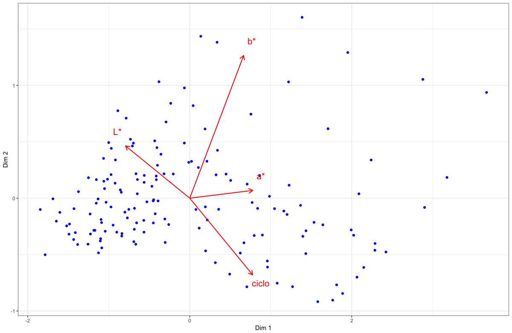
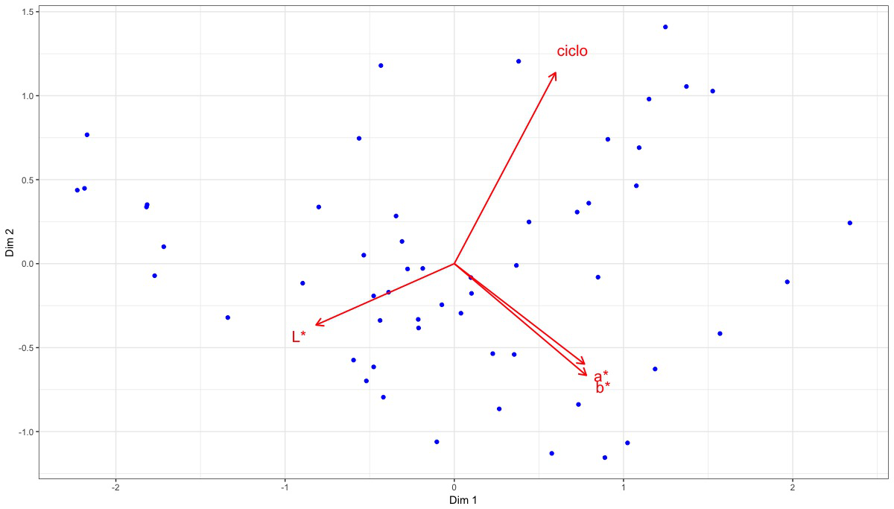
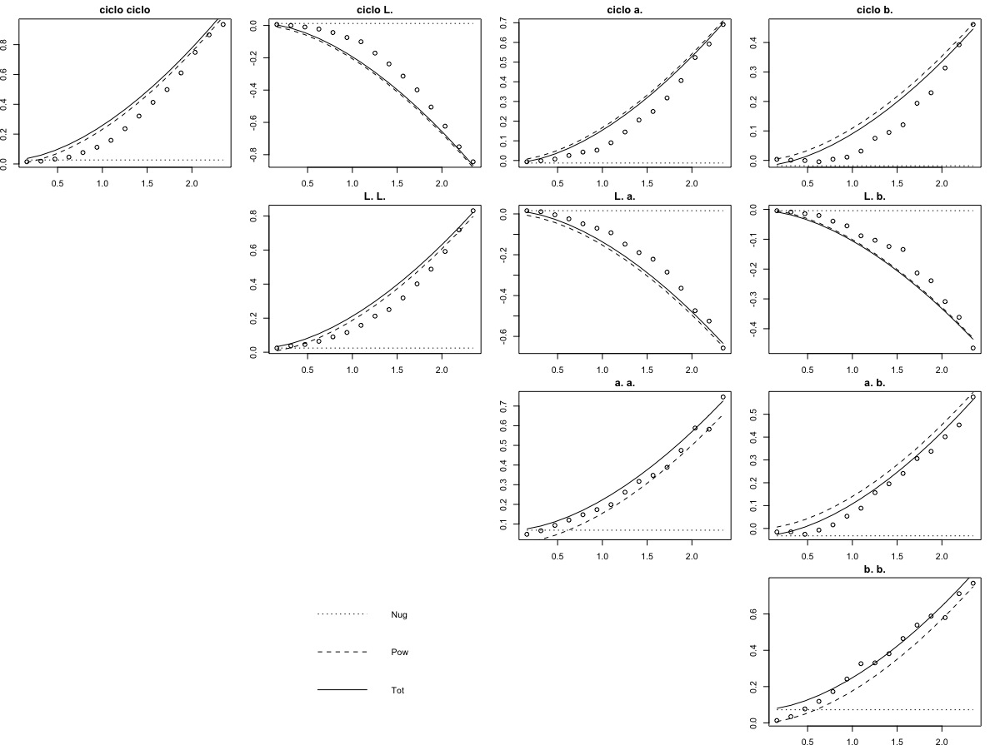
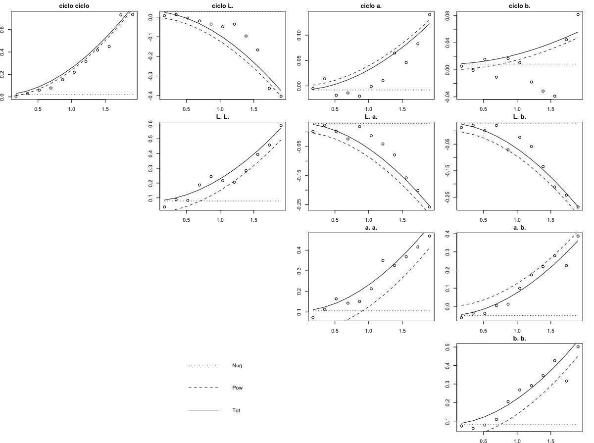
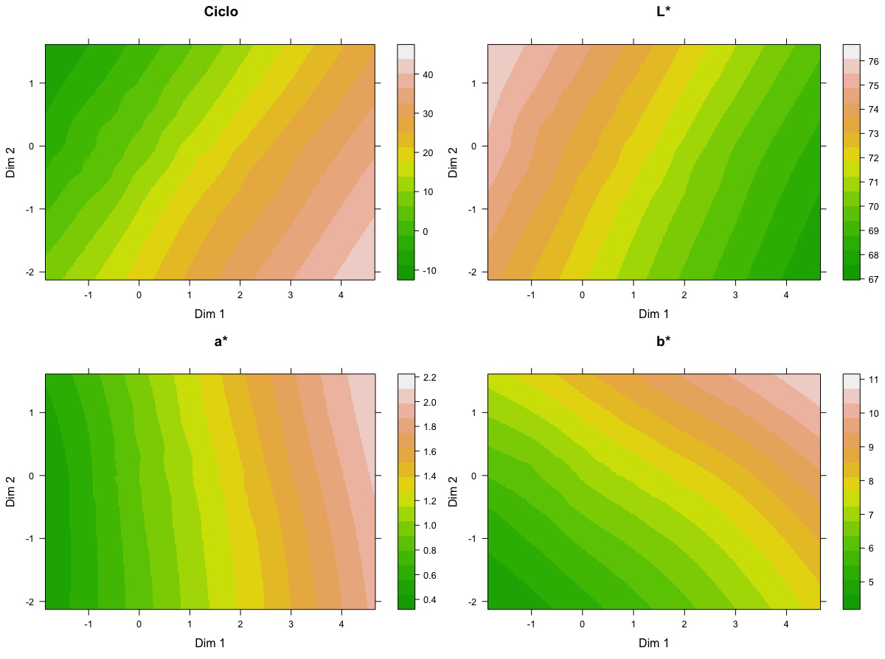
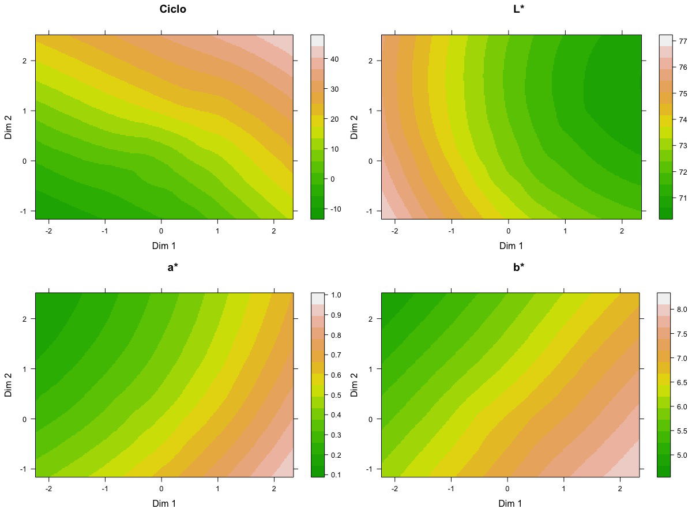
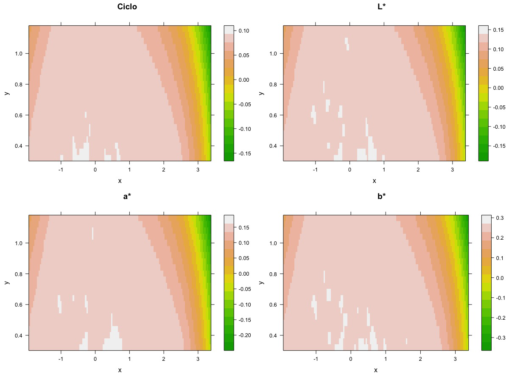
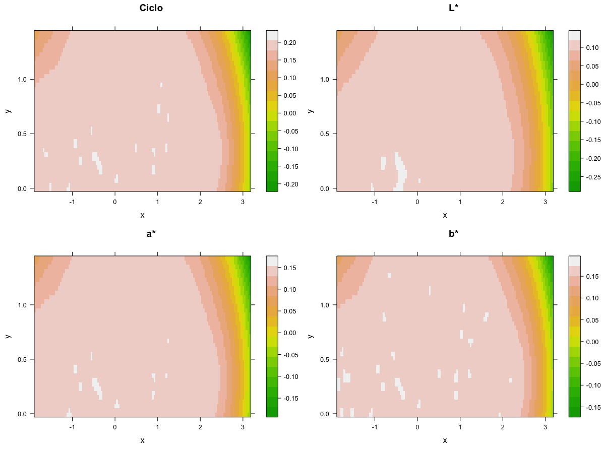

Modelo de predicción subespacial: Regresión Multivariante Gaussiana Subespacial
Víctor Vicente Palacios
DEPARTAMENTO DE ESTADÍSTICA
UNIVERSIDAD DE SALAMANCA
Director
Santiago Vicente Tavera
Contenido de la tesis
Introducción
Marco Teórico
Algoritmo MGSR
Aplicaciones
Software
Introducción
Regresión Clásica
Conjunto de variables: $v_{1}$,...,$v_{n}$
p. ej. Quiero hallar $v_{1}$ en función del resto tal que $v_{1}=f(v_{2}$,...,$v_{n})$
¿Qué sucede si quiero hallar $v_{2}$ en función del resto?
$v_{2}=f^{'}(v_{1}$,$v_{3}$,...,$v_{n})$
$f \neq f^{'}$
Introducción
Regresión Multivariante
Dado un conjunto de variables $V$ siendo $V = V_{1} \cup V_{2}$
queremos hallar $V_{1}$ en función de $V_{2}$ tal que $V_{1}=G(V_{2})$
¿Qué sucede si quiero hallar un nuevo subconjunto $V^{'}_{1}$ en función de $V^{'}_{2}$ siendo $V = V^{'}_{1} \cup V^{'}_{2}$?
$V^{'}_{1}=G^{'}(V^{'}_{2})$
$G \neq G^{'}$
Objetivo
¿Y si $G = G^{'} = M$?
Tendríamos un único modelo que nos permitiría predecir cualquier subconjunto de $V$ en función del subconjunto complementario del mismo
Nuestro principal objetivo es desarrollar un modelo $M$ que rompa con la rigidez de los modelos clásicos de regresión
Supongamos que disponemos de un conjunto $V=\{v_{1},v_{2},v_{3},v_{4},v_{5}\}$
Objetivo
Objetivo
MODELO
REDUCCION DIMENSIONAL
PROCESOS GAUSSIANOS
MGSR
Marco teórico
- Reducción Dimensional
- Análisis de Componentes Principales
- Análisis de Correspondencias
- Análisis Factorial
- Sistemas Gifi
- Métodos Biplot
- Procesos Gaussianos
Reducción Dimensional
- Técnicas descriptivas
- Adaptabilidad al ojo humano
- Baja dimensionalidad
- Máxima información
- Similaridad/Disimilaridad
Reducción Dimensional
Análisis de componentes principales

K. Pearson (1901)
Sean $X=[X_{1},...,X_{p}]$ y $S=var(X)$ su matrix de covarianzas
La descomposición espectral de $S$ es $S=T \Lambda T^{'}$ donde $T^{'} T=T T^{'}=I$ con $T=[t_{1},...,t_{p}]$ y $\Lambda=diag(\lambda_{1},...,\lambda{p)}$
Las componentes principales de $X$ son las nuevas variables
\begin{equation} Y_{j}=X t_{j} \text{ , } j=1,...,p \end{equation}Reducción dimensional
Análisis de componentes principales
library(ggfortify)
autoplot(prcomp(iris[c[1:4])), data=iris, colour = 'Species')
Dos simples líneas de código nos permiten realizar un análisis exploratorio y descriptivo de nuestros datos de manera rápida y efectiva
Reducción dimensional
Análisis de Correspondencias
J. Benzécri (1973)
Tablas de contingencia
- Perfiles Fila
- Perfiles Columna
Proyección de ambos perfiles en un subespacio común
Reducción dimensional
Análisis de Correspondencias Múltiples
Extensión del Análisis de Correspondencias
Conjunto de matrices
- Filas fijas
- Columnas variables
Representación gráfica semejante al ACP para variables categóricas
Reducción dimensional
Análisis Factorial
C. Spearman (1904)
Búsqueda de variables no observables denominadas factores
- Factores comunes
- Factores únicos
Interpretabilidad de los factores comunes
Reducción dimensional
Análisis Factorial Múltiple
Extensión del Análisis Factorial
Técnica que agrupa variables cualitativas y cuantitativas en el mismo subespacio
Ponderaciones a través del inverso del primer valor propio:
- Variables cuantitativas (ACP)
- Variables cualitativas (AC)
Se asume equilibrio entre grupos

Reducción dimensional
Sistemas Gifi
A. Gifi (1981)
Minimización de la función de pérdida (loss function) a través de Mínimos Cuadrados Alternados (ALS)
Exploración y modelado de la relación entre dos o más conjuntos de variables
- OVERALS
- HOMALS
Reducción dimensional
Métodos Biplot
K. Gabriel (1971)
Representación de elementos (filas) y variables (columnas) en un mismo subespacio
- Variables $\rightarrow$ Vectores
- Elementos $\rightarrow$ Puntos

Reducción dimensional
Métodos Biplot
Sea $X_{N \times P}$ la matriz de partida compuesta por:
- $P$ variables cuantitativas
- $N$ individuos
Un Biplot es una representación gráfica de $X$ mediante marcadores fila $r_{1},...,r_{N}$ y marcadores columna $c_{1},...,c_{P}$ tal que $x_{ij} \approx r_{i}^{'} c_{j}$
$X \approx R C^{'}$
Reducción dimensional
Métodos Biplot
Para obtener esta aproximación aplicamos una Descomposición en Valores Singulares. Si $T=rank(X)$ entonces la factorización de $X$ se obtiene tal que
\begin{equation} X=U \Lambda V^{'}=\sum_{t=1}^T \lambda_{t} r_{t} c_{t} \end{equation}
donde $U$ es una $N \times T$ matriz unitaria, $\Lambda$ es una $T \times T$ matriz diagonal no negativa, y $V$ es una $P \times T$ matriz unitaria
Reducción dimensional
Métodos Biplot
\begin{equation} X \cong U_{(T)} \Lambda_{(T)} V_{(T)}^{'} = \sum_{t=1}^T \lambda_{t} r_{t} c_{t} \end{equation}
Siendo $\lambda_{t}$ los valores propios, $r_{t}$ y $c_{t}$ los vectores propios de filas y columnas respectivamente. Por tanto, $R$ y $C$ son fácilmente obtenibles tal que
\begin{equation} R = U_{(T)} \Lambda_{(T)}^{\psi} \\ C = V_{(T)} \Lambda_{(T)}^{1-\psi} \end{equation}
donde $0 \leq \psi \leq 1$
Reducción dimensional
Biplots Clásicos
JK-Biplot : $\psi = 1$ \begin{equation} R = U \Lambda \\ C = V \end{equation}
GH-Biplot : $\psi = 0$ \begin{equation} R = U \\ C = V \Lambda \end{equation}
Reducción dimensional
Interpretación
Elementos fila $\rightarrow$ Puntos
Elementos columna $\rightarrow$ Vectores
- Proyecciones $ \bot $ puntos sobre vectores $ \approx $ valor real
- Producto escalar vectores $ \approx $ matriz covarianzas
- Longitud vectores $ \approx $ desviación estándar de las variables
- Coseno del ángulo entre dos variables $ \approx $ correlación entre ellas
Propiedades
Reducción dimensional
Calidad de representación
| Global | $CA = \frac{\lambda_{1}+\lambda_{2}}{sum_{t=1}^T \lambda_{t}}$ |
| Filas | $CR = \frac{r^2_{jk}}{\sum_{k=1}^N r^2_{jk}}$ |
| Columnas | $CC = \frac{c^2_{jk}}{\sum_{k=1}^P c^2_{jk}}$ |
Reducción dimensional
Otros Biplots
| Biplot | Autor | Características |
| HJ | M.P. Galindo (1986) | Alta calidad de representación en filas y columna |
| MANOVA | H. Gabriel (1972) | Representación de grupos de elementos fila y variables |
| Generalizado | J. Vicente-Villardón (1992) | Permite considerar la importancia de los diferentes individuos y variables |
| No lineales | J. Gower y S. Harding (1988) | Trayectorias no lineales de los individuos |
| Interpolación | J. Gower y D. Hand (1995) | Superponen nuevos individuos proyectándolos sobre el subespacio de representación |
| Predicción | J. Gower y D. Hand (1995) | Infieren valores de las variables originales dado un punto sobre la representación subespacial |
| Multivía | Varios | Versiones Biplot de técnicas multivariantes de varias vías |
Reducción dimensional
Otros Biplots
- Meta-Biplot -- J. Martín-Rodríguez, P. Galindo y J.L. Vicente-Villardón (2002)
- Minería de datos -- V. Vairinhos
- Logístico -- J. Vicente-Villardón, M. Galindo-Villardón y A. Blázquez-Zaballos (2006)
- Canónico -- A. Vallejo-Arboleda, J. Vicente-Villardón y P. Galindo-Villardón (2006)
- Nominal -- J. Hernández-Sánchez y J. Vicente-Villardón (2016)
- Co-Tucker3 -- M. Rodríguez-Rosa (2016)
Marco teórico
- Reducción Dimensional
- Procesos Gaussianos
- Kriging
- Cokriging
Procesos Gaussianos
- Observaciones ocurren en un dominio contínuo (tiempo o espacio)
- Extensión de las distribuciones multivariantes gaussianas
Sea $y=\{y_{1},...,y_{n}\} $ una muestra de $n$ elementos y $x$ su dominio asociado
Procesos Gaussianos
Función de covarianza ideal
La función de covarianza del dominio contínuo se define como
$k(x,x^{\prime}) = \sigma^2_{f} exp \left[\frac{-(x-x^{\prime})^2}{2l^2}\right]$
- $f$ función de nuestra distribución
- $\sigma^2_{f}$ covarianza de la función $f$
- $l$ distancia o gradiente temporal entre $x$ y $x^{\prime}$
La función $k$ nos indica cuánto varían nuestros datos en función de la distancia o gradiente temporal en el que se encuentran
Procesos Gaussianos
Función de covarianza
En general los PG presentan ruido que hace que la distribución sea $y = f(x) +N(0,\sigma^2_{n})$ y por tanto
$k(x,x^{\prime}) = \sigma^2_{f} exp \left[\frac{-(x-x^{\prime})^2}{2l^2}\right] + \sigma^2_{n} \delta(x,x^{\prime})$
- $\delta(x,x^{\prime})$ delta de Kronecker
Procesos Gaussianos
Estimación
Para poder realizar una estimación $y_{*}$ de $y$ calculamos la función de covarianza asociada al dominio contínuo para todas las posibles combinaciones existentes entre cada observación tal que
$K_{*} = \begin{bmatrix} k(x_{*},x_{1}) & k(x_{*},x_{2}) & \dots & k(x_{*},x_{n}) \end{bmatrix} \text{ } K_{**} = k(x_{*},x_{*})$
El estimador se calcula tal que
$\hat{y}_{*}=K_{*}K^{-1}y$
Y la varianza del estimador es
$var(y_{*})=K{**}-K_{*}K^{-1}K_{*}^{T}$
Procesos Gaussianos
Geoestadística
D. Krige (1951)
- Minería
- Basado en la experiencia
G. Matheron (1962)
- École de Mines (Paris)
- Formulación matemática
Aplicaciones en hidrología, geología, agricultura, geografía, meteorología, ecología, biología, etc
Procesos Gaussianos
Datos geoestadísticos
| Variable regionalizada $z(x_{\alpha})$ | Variables aleatorias $Z(x_{\alpha})$ |
Procesos Gaussianos
Conceptos geoestadísticos
La media de $Z(x_{\alpha})$ se defime como $E[Z(x_{\alpha})]=m$
La covarianza depende de la distancia $h$ entre pares de puntos $x_{\alpha}$ y $x_{\beta}$
$Cov(Z(x_{\alpha}),Z(x_{\beta}))=E[(Z(x_{\alpha})-m) \cdot (Z(x_{\alpha}+h)-m)]$
Procesos Gaussianos
Conceptos geoestadísticos
La media de los incrementos $x_{\alpha}$ y $x_{\alpha}+h$ es nula
$E[Z(x_{\alpha}+h)-Z(x_{\alpha})]=0$
La varianza de los incrementos es
$var(Z(x_{\alpha}+h)-Z(x_{\alpha}))=2\gamma(h)$
donde $\gamma(h)$ es la semivarianza que se expresa como
| $\gamma(h)=\frac{1}{2}(Z(x_{\alpha}+h)-Z(x_{\alpha}))^2$ |
Procesos Gaussianos
Variograma $\gamma^{*}$
| Variograma en nube $\frac{1}{2}(z(x_{\alpha}+h)-z(x_{\alpha}))^2$ | Variograma experimental $\frac{1}{2n}\sum_{\alpha=1}^{n}(z(x_{\alpha}+h)-z(x_{\alpha}))^2$ |
Procesos Gaussianos
Variograma teórico
- Nugget ($nug$): Valor de la semivarianza para distancias cercanas a cero
- Sill ($b$): Valor constante que alcanza la semivarianza a una distancia $h$ determinada
- Rango ($a$): Valor de $h$ al que alcanzamos el sill $b$
Procesos Gaussianos
Covarianza espacial
El variograma teórico se obtiene a través de una función lineal. Esta función puede ser combinación lineal de una subserie de variogramas o covarianzas espaciales
$\gamma(h) = C(0) - C(h) $
A su vez se define la correlación espacial como
$\rho(h) = \frac{C(h)}{C(0)} $ siendo $C(0)=b$
Procesos Gaussianos
Variograma anidado
La combinación lineal de variogramas se denomina variograma anidado y se define
$\gamma(h)=\sum_{u=1}^S\gamma_{u}(h)=\sum_{u=1}^Sb_{u}g_{u}(h)$
donde $g_{u}(h)$ son variogramas normalizados y $b_{u}$ es el sill de cada uno de ellos
Los variogramas normalizados son funciones gaussianas (Gaussiana, Esférica, Exponencial, Cuadrática, Lineal...)
Por tanto la relación entre la correlación espacial $\rho(h)$ y el variograma teórico $\gamma(h)$ es
$\gamma(h)=b(1-\rho(h))$
La estimación de variogramas normalizados se realiza a través de ajustes lineales como los mínimos cuadrados generalizados, ordinarios, ponderados...
Procesos Gaussianos
Kriging Simple
La estimación espacial de los puntos $x_{0}$ del mallado se realiza como combinación lineal
$Z^{*}(x_{0})=m+\sum_{\alpha=1}^{n}w_{\alpha}(Z(x_{\alpha})-m)$
donde $Z^{*}$ es la $Z$ estimada. Finalmente el sistema de ecuaciones se reduce a
$\sum_{\alpha=1}^n w_{\alpha}C(x_{\alpha}-x_{\beta})=C(x_{\alpha}-x_{0}) \text{ } \alpha=1,...,n$
Existen otros tipos de kriging como el ordinario, el universal...
Procesos Gaussianos
Cokriging
El método cokriging es la versión o extensión multivariante del kriging. La técnica del cokriging basa su principio en la correlación entre muestras debido a su localización espacial
Posibles distribuciones de las muestras:
- Heterotopia: Puntos no coincidentes
- Heterotopia parcial: Algunas variables comparten localizaciones
- Isotopia: Todas las variables se representan en los mismos puntos
Procesos Gaussianos
Variograma Cruzado
Un variograma cruzado se define como la mitad del producto del incremento de dos variables
Dadas $P$ variables siendo $i,j=1,...,P$ los variogramas cruzados posibles son $\frac{P(P+1)}{2}$ de los cuales $P$ variogramas son directos $i=j$ y $\frac{P(P-1)}{2}$
Como resultado del cálculo de cada variograma obtenemos una matriz $\Gamma(h)$ de tamaño $P \times P$ que es combinación lineal de $\Gamma_{u}(h)$ tal que $\Gamma(h)=\sum_{u=1}^{S}\Gamma_{u}(h)$
El variograma cruzado se define como
| $\gamma_{ij}^{*}(h)=\dfrac{1}{2n}\sum_{\alpha=1}^N(z_{i}(x_{\beta})-z_{i}(x_{\alpha}))\cdot(z_{j}(x_{\beta})-z_{j}(x_{\alpha}))$ |
Procesos Gaussianos
Modelo lineal de corregionalización
Al igual que hemos hecho para el caso univariante, hemos de ajustar un modelo a cada uno de los variogramas cruzados
La función de covarianza espacial es
$C(h)=\sum_{u=1}^{S}B_{u}\rho_{u}(h)$

donde $B_{u}$ es la matriz de corregionalización de dimensión $P \times P$ semidefinida positiva
Procesos Gaussianos
Cokriging Simple
El cokriging simple se apoya en el conocimiento de las medias intrínsecas de las variables analizadas
$Z_{i_{0}}^{*}(x_{0})=m_{i_{0}}+\sum_{i=1}^{P}\sum_{\alpha=1}^{n}w_{\alpha}^{i}(Z_{i}(x_{\alpha})-m_{i})$
donde $i_{0}$ es la variable a estimar e $i$ corresponden a las $P$ variables analizadas
Existen diferentes tipos como el Cokriging ordinario, universal, colocado, factorial...
Regresión Multivariante Gaussiana Subespacial
(MGSR)
MGSR
Algoritmo
MGSR
Coordenadas Subespaciales
Partimos de una matriz $X_{N \times P}$ con $N$ elementos y $P$ variables, ninguna de ellas de dominio contínuo y estandarizada por columnas
Aplicando una técnica de reducción dimensional obtenemos una serie de coordenadas subespaciales $R_{N \times T}$ para cada uno de los $N$ elementos en $T$ subespacios
Con $X$ y $R$ conformamos la matriz $Z(u)=[X(R)]$
donde $u$ son las coordenadas subespaciales intrínsecas a $Z$
$Z$ es semejante a las matrices empleadas en Procesos Gaussianos
MGSR
Variogramas Cruzados Subespaciales
El vector de distancias intermedias o lag $h$ se compone de $k$ elementos tal que $h=\{h_{1},h_{2},...,h_{k}\}$
El variograma experimental se define como
$\Gamma^{*}(h_{k})=\gamma_{ij}^{*}(h_{k})$
donde $i,j={1,...,P}$
| $\gamma_{ij}^{*}(h_{k})=z^{T}A(h_{k})z$ |
MGSR
Variogramas Cruzados Subespaciales
$A(h_{k}) = \frac{M_{i}(h_{k}) - \eta_{ij}(h_{k})}{J(h_{k})}=\frac{1}{J(h_{k})}$ $\begin{bmatrix} m_{1}(h_{k}) & -\eta_{12} & \dots & -\eta_{1N} \\ -\eta_{12} & m_{2}(h_{k}) & \dots & -\eta_{2N} \\ \vdots & \vdots & \ddots & \vdots \\ -\eta_{1N} & -\eta_{2N} & \dots & m_{N}(h_{k}) \end{bmatrix}$
donde $m_{i}$ es el número de pares que tiene el elemento $i$ a la distancia $h_{k}$ y
\begin{equation*} \eta_{ij}= \left\lbrace \begin{array}{l} 1 \text{ para pares \{i,j\} que se encuentren en distancias } h_{k} \\ \\ 0 \text{ para pares \{i,j\} que no se encuentren en distancias } h_{k} \\ \end{array} \right. \end{equation*}
MGSR
Variogramas Cruzados Subespaciales
\begin{equation*} \Gamma^{*}(h_{k})= \begin{bmatrix} z_{1}A(h_{k})z^{T}_{1} & z_{1}A(h_{k})z^{T}_{2} & \dots & z_{1}A(h_{k})z^{T}_{P} \\ z_{2}A(h_{k})z^{T}_{1} & z_{2}A(h_{k})z^{T}_{2} & \dots & z_{2}A(h_{k})z^{T}_{P} \\ \vdots & \vdots & \ddots & \vdots \\ z_{P}A(h_{k})z^{T}_{1} & z_{P}A(h_{k})z^{T}_{2} & \dots & z_{P}A(h_{k})z^{T}_{P} \end{bmatrix} \end{equation*}
$\gamma^{*}_{ij}=[\Gamma^{*}_{ij}(h_{1}),...,\Gamma^{*}_{ij}(h_{K})]$
CV <- crossvariogram(coord=data[,1:2],values=data[,3:6],n=12)
plot.crossvariogram(CV)
MGSR
Modelo Lineal Corregionalizado
Una vez calculada los variogramas cruzados subespaciales $\Gamma^{*}(h_{k})$ hemos de ajustar un modelo lineal $\Gamma(h)$ tal que
| $\Gamma(h)=\sum_{s=1}^{S}B_{s}g_{s}(h)$ |
$B_{s}$ es la matriz de corregionalización $N \times N$ de sills y $g_{s}(h)$ las funciones ajustadas con rango fijo para cada una de ellas
Para el modelo global hemos de minimizar
| $WSS(B)=\sum_{i=1}^{p}\sum_{j=1}^{p}WSS(b_{ij})$ |
MGSR
Modelo Lineal Corregionalizado
La función de mínimos cuadrados ponderados para cada sill es
$WSS(b_{ij})=(\gamma_{ij}^{*}-Gb_{ij})^TCov(b_{ij})(\gamma_{ij}^{*}-Gb_{ij})$
$G$ es la matriz $K \times S$ correspondiente a las distintas funciones de los variogramas anidados
La matriz $Cov(b_{ij})$ es la matriz de varianza-covarianza subespacial que representa la variabilidad de nuestra muestra en función de las diferentes distancias $h$
MGSR
Matriz Varianza-Covarianza Subespacial
La matriz $Cov(b_{ij})$ representa la variabilidad de nuestra muestra en función de las diferentes distancias $h$ y es equivalente a
\begin{equation} Cov(\gamma_{ij}^{*}(h_{k}),\gamma_{ij}^{*}(h_{k'}))=tr(A(h_{k})C(b_{ij})A(h_{k'})C(b_{ij}))+ tr(A(h_{k})C(b_{ii})A(h_{k'})C(b_{jj})) \end{equation}
donde $C(b_{ij})=\sum_{s=1}^{S}b_{ij,s}\rho_{s}$ es la matriz de covarianzas entre $z_{i}$ y $z_{j}$ y $\rho_{s}$ es la matriz de correlación subespacial para cada variograma normalizado
| $Cov(\gamma_{ij}^{*}(h_{k}),\gamma_{ij}^{*}(h_{k'}))=\sum_{r=1}^{S}\sum_{q=1}^{S}[(b_{ij,r}b_{ij,q}+b_{ii,r}b_{jj,q})tr(\rho_{r}A(h_{k})\rho_{q}A(h_{k'}))]$ |
MGSR
Algoritmo LMC subespacial
| Paso 0: | Inicializamos $\tau$ a 0 y evaluamos $WSS(\widehat{B}^{\tau})$ | |||
| Paso 1: | $\Gamma_{s_{0}}^{*}(h_{k})=\Gamma^{*}(h_{k})-\sum_{s\neq s_{0}}^{S}\widehat{B}_{s}^{\tau}g_{s}(h_{k}),\text{ }k=1,...,K$ | |||
| Paso 2: | $ \widehat{b}_{ij,s_{0}}^{\tau+1}=(g_{s_{0}}^{T}Cov(\widehat{b}_{ij}^{\tau})^{-1}g_{s_{0}})^{-1}g_{s_{0}}^{T}Cov(\widehat{b}_{ij}^{\tau})^{-1}\gamma_{ij,s_{0}}^{*} $ | |||
| Paso 3: |
|
|||
| Paso 4: | Si la diferencia entre $WSS(\widehat{B}^{\tau+1})$ y $WSS(\widehat{B}^{\tau})$ es mayor que $\delta \rightarrow$ Paso 1 |
RES <- lmc(CV= crossvariog,fun= c("Lin","Pow"),a= c(0.4,1.5))
plot.crossvariogram(CV,RES)
MGSR
Cokriging Simple
Partiendo de $Z(u_{\alpha})$ queremos hallar $Z^{*}(u_{0})$ siendo $u_{0}$ las coordenadas subespaciales de nuestro mallado. Para ello, hemos de hallar $W_{s}$
$C(u_{\alpha}-u_{\beta})W_{s}=B_{s} \otimes \rho_{s}(u_{0}-u_{\alpha})$
donde $C(u_{\alpha}-u_{\beta})=\sum_{s=1}^{S} B_{s} \otimes \rho_{s}(u_{\alpha}-u_{\beta})$
Y por tanto
| $Z_{i}^{*}(u_{0})= \sum_{i=1}^{P}\sum_{\alpha=1}^{N}w_{\alpha}^{i}Z_{i}(u_{\alpha})$ | $var(Z-Z^{*})=C(0)-\sum_{s=1}^{S} c_{s}^{T} C c_{s}$ |
xygrid <- GRID_MGSR(DAT = coordinates,lag = 0.05)
Z <- cokrig(RES,xygrid)
MGSR
Validación Cruzada
Suprimimos un elemento $Z(u_{\alpha})$ estimando el resto $Z_{i}^{*}(u_{[\alpha]})$
| Desviación del valor cuadrático medio | $\frac{1}{N}\sum_{\alpha=1}^{N}(Z_{i}(u_{\alpha})-Z_{i}^{*}(u_{[\alpha]}))^2 \cong 0$ |
| Media cuadrática del error estimado | $\frac{1}{N}\sum_{\alpha=1}^{N}\frac{(Z_{i}(u_{\alpha})-Z_{i}^{*}(u_{[\alpha]}))^2}{\sigma^2_{[\alpha]}} \cong 1$ |
Siendo $\sigma^2_{[\alpha]}$ la desviación típica del error predicho en la posición $u_{\alpha}$
Valid <- CrossValidation(RES)
MGSR
Predicción
MGSR
Predicción
MGSR
Predicción
Aplicaciones
- Predicción de los efectos del stent en enfermos de infarto de miocardio
- Predicción de los efectos de cristalización en el envejecimiento de conglomerados silíceos
efectos post-stent
Antecedentes
Ensayo clínico GRACIA-3
- Aleatorio, abierto y multicéntrico
- 20 hospitales españoles
- Angiografías coronarias
- Post-operatorias (346 pacientes)
- Follow-up (299 pacientes)
- Mediciones en laboratorio independiente
Objetivo
Evaluar la eficacia del stent liberador de fármaco (paclitaxel) frente a un stent convencional
efectos post-stent
reestenosis
La reestenosis es la reducción en el lumen después de una intervención percutánea con o sin implantación de stent
Ocurre entre los 3 y 12 meses posteriores a la intervención. Afecta a un 10% de los pacientes
La incidencia de reestenosis en el ensayo fue similar en ambos tipos de stent aunque la pérdida de lumen se redujo en los grupos con recubrimiento
efectos post-stent
Objetivo
Predecir el comportamiento del lumen en estados posteriores a la intervención (postoperatorio y follow-up)
- La matriz de partida se compone de 180 individuos y 5 variables:
- Seg Length PRE: longitud del segmento (mm)
- Diam Ref PRE: diámetro de referencia (mm)
- Diam Obs PRE:diámetro de obstrucción (mm)
- Diam Obs POST:diámetro tras intervención (mm)
- Diam Obs FU:diámetero a los 12 meses (mm)
efectos post-stent
JK-Biplot
efectos post-stent
Variograma ajustado (LMC)
efectos post-stent
LMC
efectos post-stent
Cokriging
efectos post-stent
Varianza residual $var(Z-Z^{*})$
efectos post-stent
Varianza residual 3D
efectos post-stent
Validez y estabilidad del modelo
10 modelos train/test aleatorios
efectos post-stent
Validez y estabilidad del modelo
efectos post-stent
Ejemplo 1
efectos post-stent
Ejemplo 2
efectos post-stent
Ejemplo 3
efectos post-stent
Valores ausentes
valor faltante en el follow-up
Aplicaciones
- Predicción de los efectos del stent en enfermos de infarto de miocardio
- Predicción de los efectos de cristalización en el envejecimiento de conglomerados silíceos
Cristalización fosfatos
Antecedentes
Conservación Patrimonio Histórico
- Material pétreo (Catedral de Zamora)
- Alteraciones medioambientales $\rightarrow$ Alteraciones estructura y color
- Reprodución patologías $\rightarrow$ envejecimiento cámaras climáticas
Objetivo
Determinar los efectos del envejecimiento de la piedra sobre el color de la misma
Cristalización fosfatos
Catedral de Zamora
Clima mediterráneo de tendencia continental
Experimentación $\rightarrow$ Cámaras climáticas (25 ciclos)
Medición de color $\rightarrow$ Minolta CR-310
Cristalización fosfatos
Tratamientos
Ensayo combinado hielo/deshielo junto a frío/calor
| Paso 1: | Secado $\rightarrow$ peso constante probeta |
| Paso 2: | Inmersión en agua destilada/solución sales (16 horas) |
| Paso 3: | Enfriamiento a -20ºC (3 horas) |
| Paso 4: | Calentamiento a 110ºC (3 horas) |
| Paso 5: | Temperatura ambiente (2 horas) |
Se encontraron diferencias en ambos tratamientos y efectos sobre el color de las piedras
|
Tratamiento 1 Efectos climáticos Tratamiento 2 Efectos climáticos + disolución mineral (Excrementos aves) |
Cristalización fosfatos
Objetivo
Predecir el comportamiento de las coordenadas cromáticas en diferentes ciclos
- Las matrizes de partida son $155 \times 4$ (T1) y $55 \times 4$ (T2):
- Ciclo: $[0,1,2,3,4,5,10,15,20,25]$
- L*: Luminosidad de negro (0) a blanco (100)
- a*: Verde ($<0$) a magenta ($>0$)
- b*: Azul ($<0$) a amarillo ($>0$)

Cristalización fosfatos
JK-Biplot
| Tratamiento 1 | Tratamiento 2 |
|  |  |
Cristalización fosfatos
Variogramas ajustados (LMC)
| Tratamiento 1 | Tratamiento 2 |
|  |  |
Cristalización fosfatos
Cokriging
| Tratamiento 1 | Tratamiento 2 |
|  |  |
Cristalización fosfatos
Varianza residual $var(Z-Z^{*})$
| Tratamiento 1 | Tratamiento 2 |
|  |  |
Cristalización fosfatos
Validación Cruzada
Cristalización fosfatos
PREDICCIÓN L* a* para b*=6.8/CICLO=35(T1)
Cristalización fosfatos
PREDICCIÓN L* a* para b*=6.8/CICLO=35(T2)
Modelo de predicción subespacial: Regresión Multivariante Gaussiana Subespacial
Víctor Vicente Palacios
DEPARTAMENTO DE ESTADÍSTICA
UNIVERSIDAD DE SALAMANCA
Director
Santiago Vicente Tavera